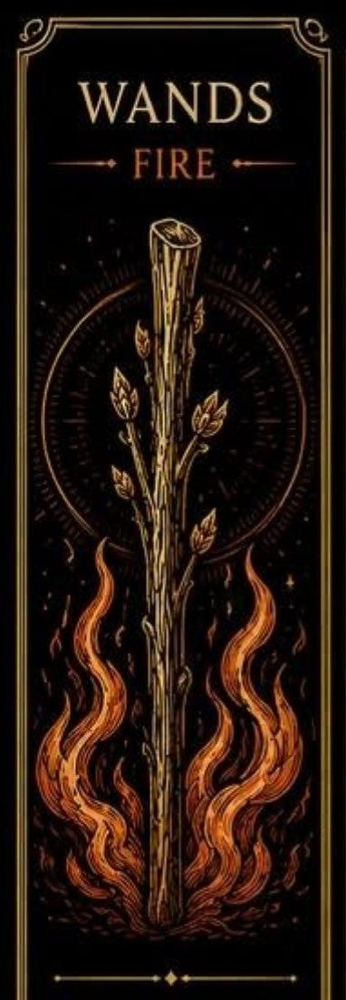
Palice sú jednou zo štyroch sád Malej arkány v tarote. Predstavujú energiu, tvorivosť, nadšenie a túžbu konať. Táto sada je spojená s iniciatívou, osobným rozvojom a schopnosťou premieňať nápady na skutočnosť.
Karty Palíc často zobrazujú obdobia rastu, objavovania nových možností a prekonávania výziev. Ich energia je dynamická a povzbudzuje človeka, aby sa nebál urobiť prvý krok.
Palice sú spojené s elementom ohňa, ktorý symbolizuje vášeň, kreativitu a životnú energiu. Karty tejto sady často hovoria o nových projektoch, ambíciách, odhodlaní a motivácii dosiahnuť svoje ciele.
Môžu tiež upozorňovať na potrebu vytrvalosti, sebavedomia alebo správneho nasmerovania energie.
Karty tejto sady obsahuju palice alebo drevené žezlá, ktoré symbolizujú rast a tvorivú silu. Rovnako ako strom vyrastá zo semienka, aj nové nápady potrebujú čas, energiu a starostlivosť, aby sa mohli rozvinúť.
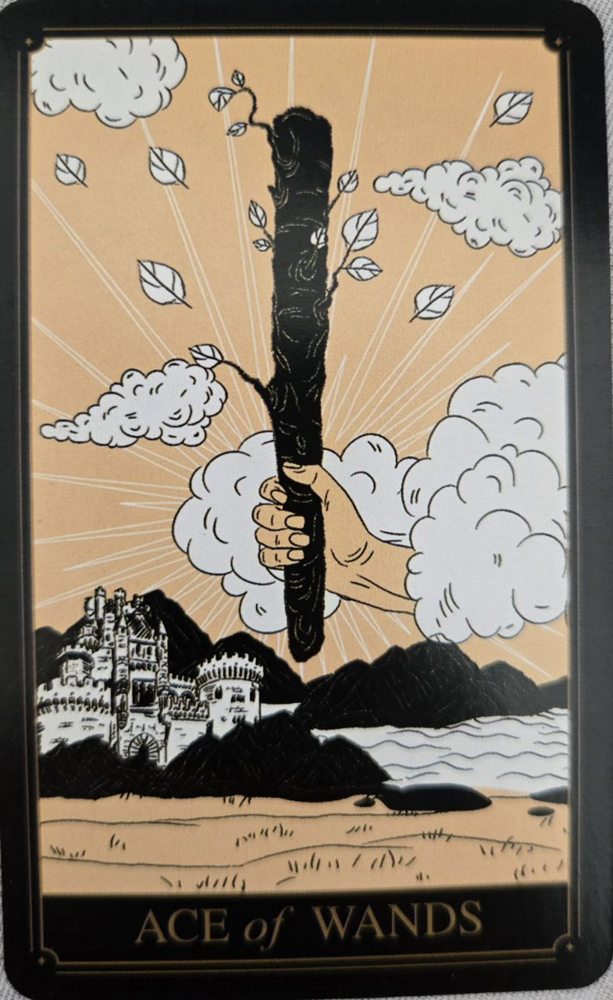
Karta nových začiatkov, inšpirácie a tvorivej energie. Predstavuje iskru, z ktorej môže vzniknúť nový projekt alebo životná etapa.
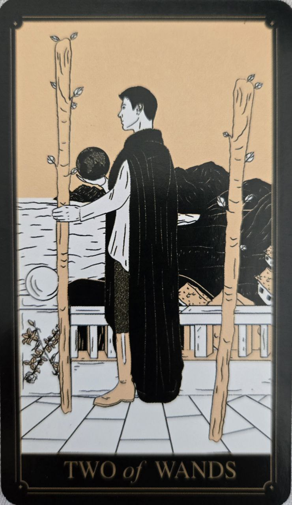
Symbol plánovania a rozhodovania o budúcnosti. Naznačuje, že nastal čas pozrieť sa za hranice známeho prostredia.
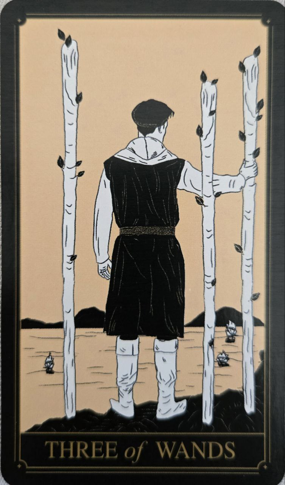
Karta pokroku a rozširovania obzorov. Predstavuje obdobie, keď sa prvé výsledky začínajú prejavovať.
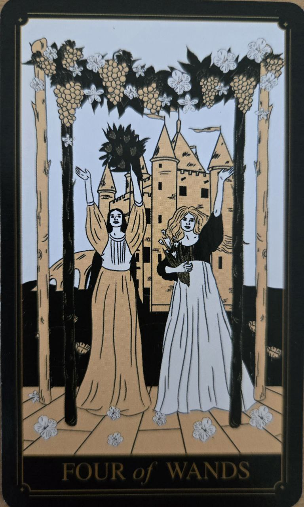
Symbol stability, osláv a radostných udalostí. Často sa spája s úspechom, rodinou alebo pocitom bezpečia.
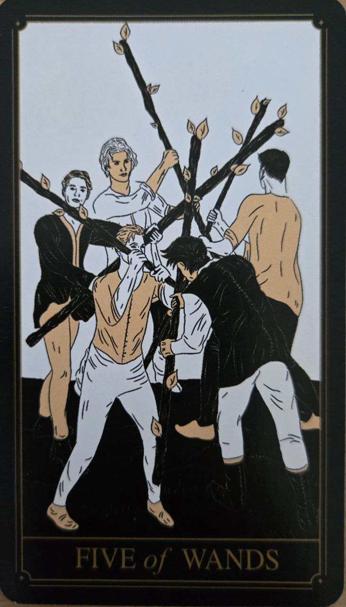
Karta súťaženia, konfliktov a rozdielnych názorov. Upozorňuje na výzvy, ktoré môžu viesť k osobnému rastu.
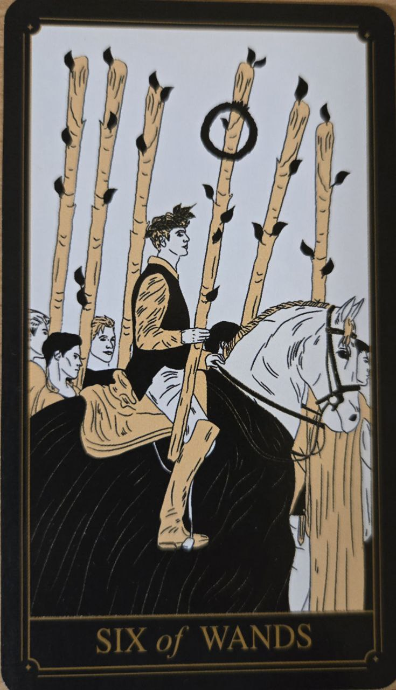
Predstavuje úspech, uznanie a víťazstvo. Naznačuje, že úsilie a vytrvalosť prinášajú výsledky.
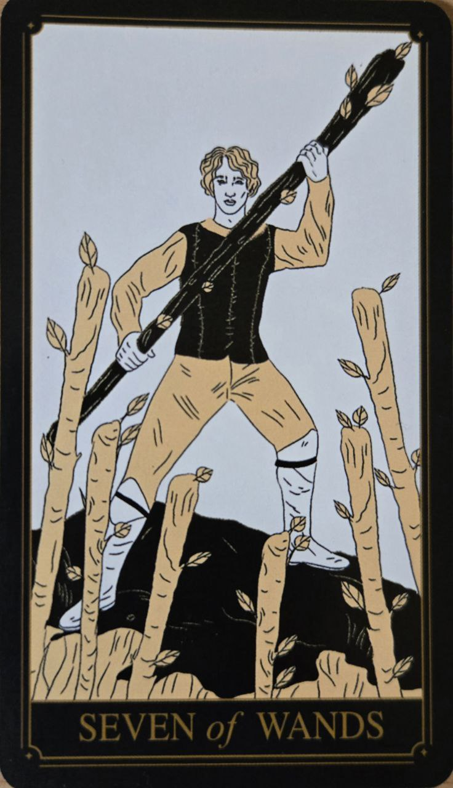
Karta obrany vlastných názorov a hodnôt. Hovorí o potrebe vytrvať napriek tlaku okolia.
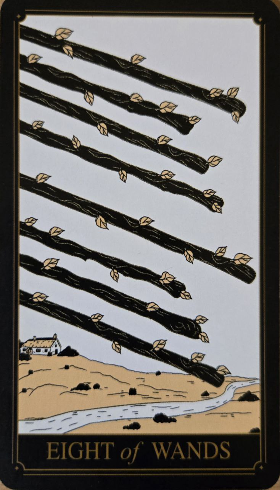
Symbol rýchleho pohybu a udalostí, ktoré naberajú tempo. Často naznačuje správy, cestovanie alebo rýchly vývoj situácie.
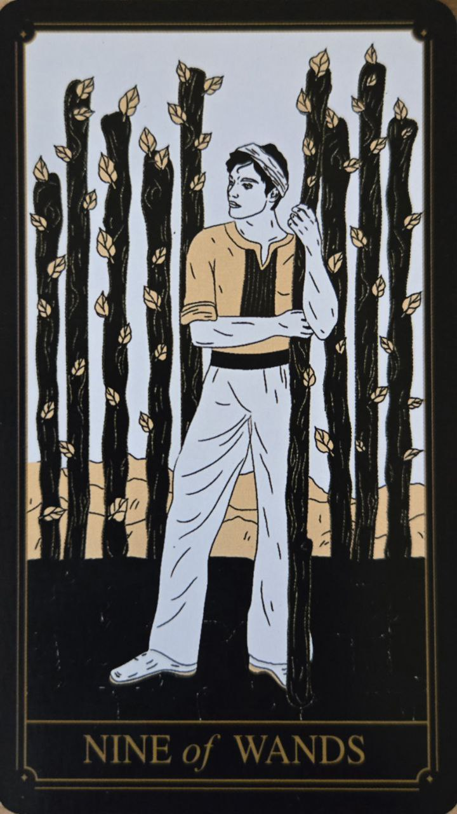
Predstavuje vytrvalosť a odolnosť po náročnom období. Povzbudzuje nevzdávať sa tesne pred cieľom.
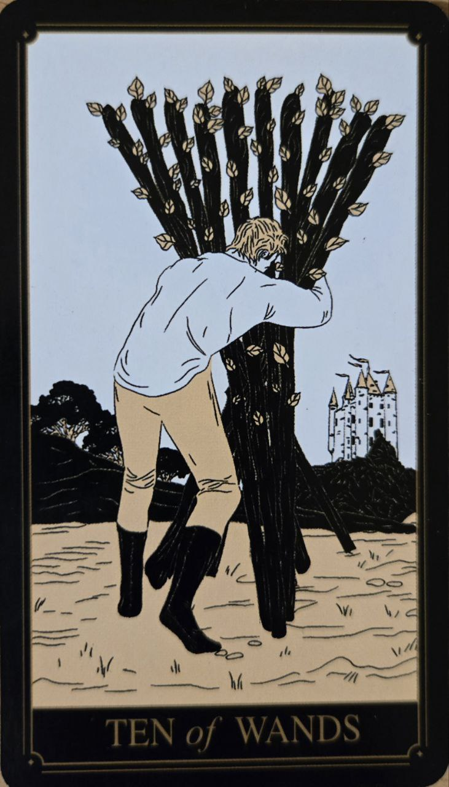
Karta zodpovednosti a veľkého pracovného zaťaženia. Upozorňuje na potrebu rozdeliť si povinnosti alebo požiadať o pomoc.
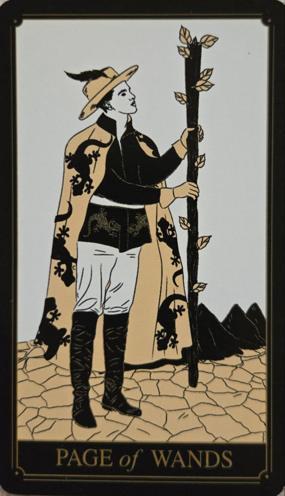
Symbol zvedavosti, nových príležitostí a nadšenia. Predstavuje človeka pripraveného objavovať nové možnosti.
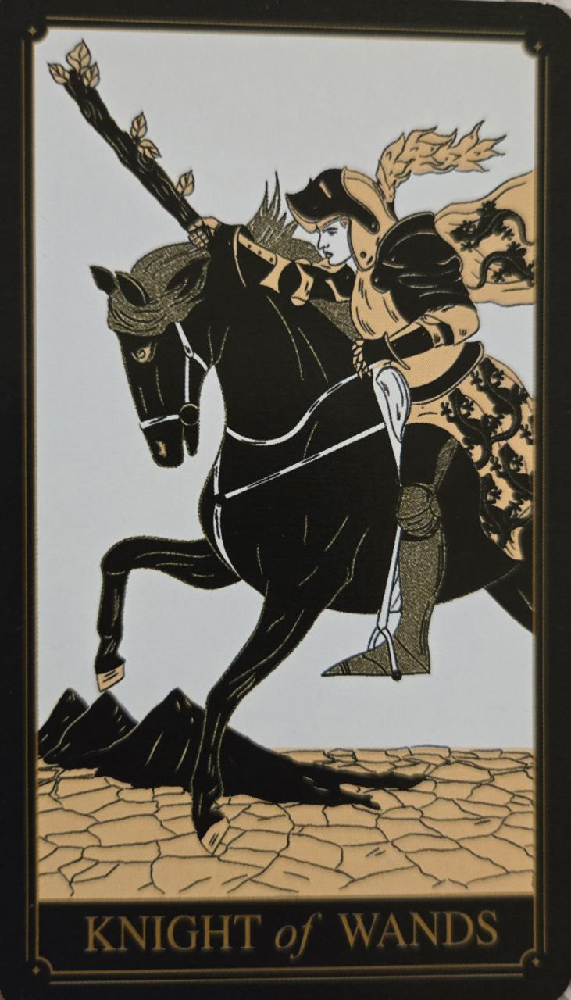
Karta odvahy, akcie a dobrodružstva. Naznačuje energické napredovanie, ale aj riziko netrpezlivosti.
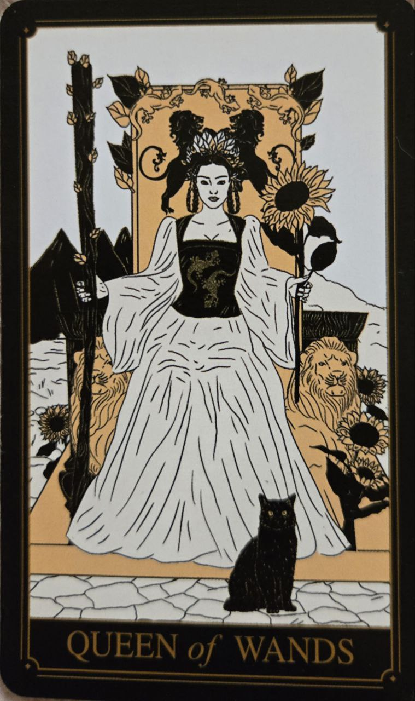
Predstavuje sebavedomie, charizmu a tvorivú silu. Je symbolom človeka, ktorý dokáže inšpirovať ostatných.
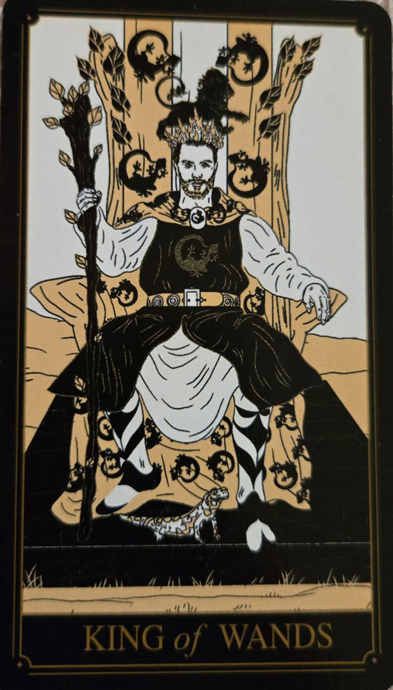
Karta vodcovstva, vízie a odhodlania. Predstavuje schopnosť premeniť nápady na dlhodobé úspechy.